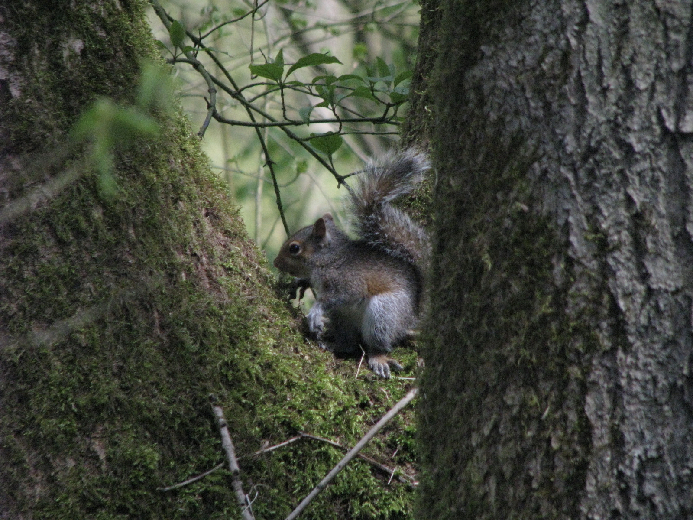

Some Photos I Gone and Took
Dog
Sheep
Church
Squirrel
This is a photograph of my dog, Reuben, when he was very young.
Some inquisitive and photogenic sheep that live near my house
I done took these photos look
Stoney Stanton Church in winter

A sweet-looking young squirrel